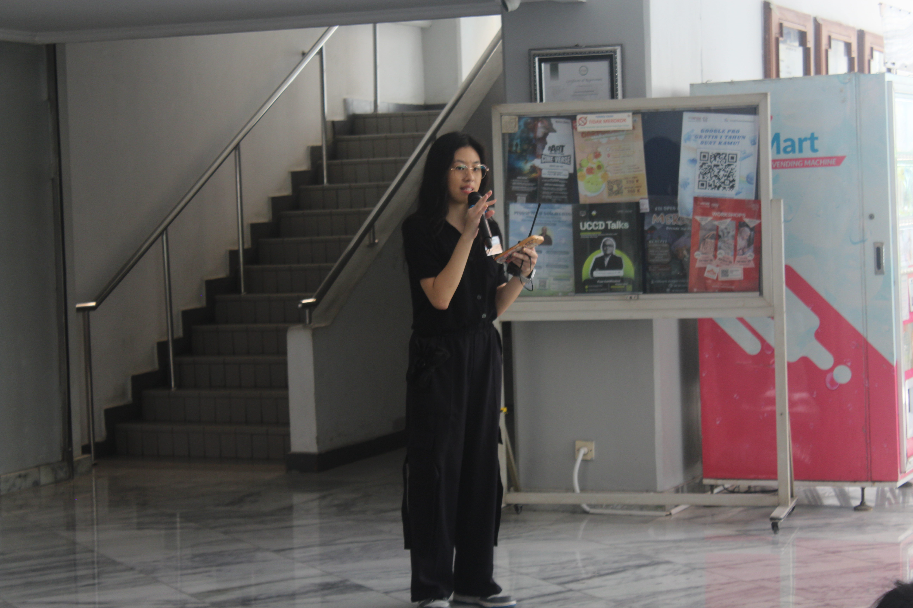
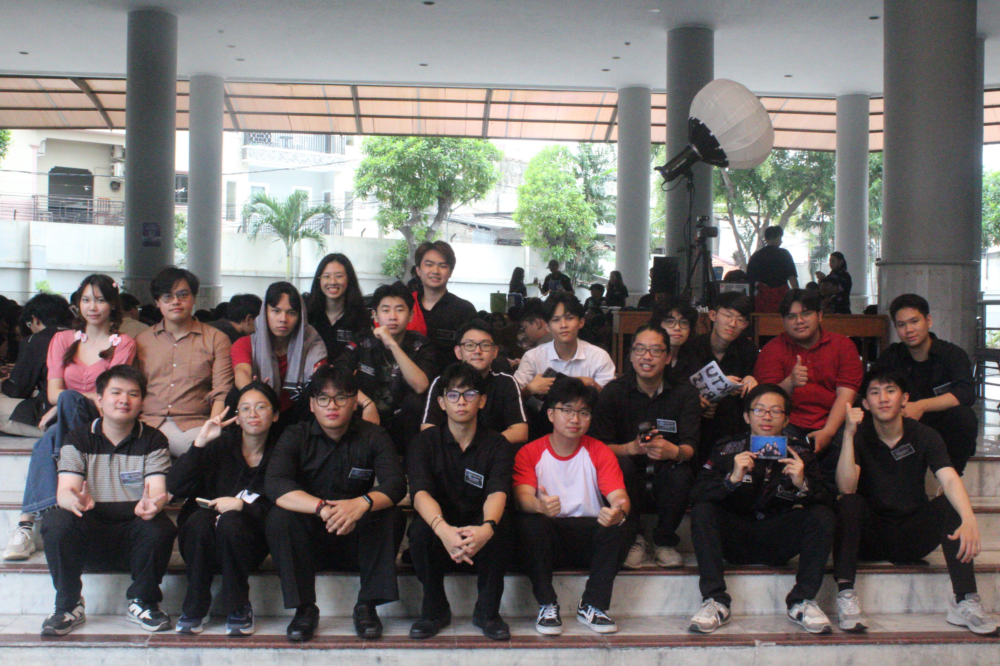
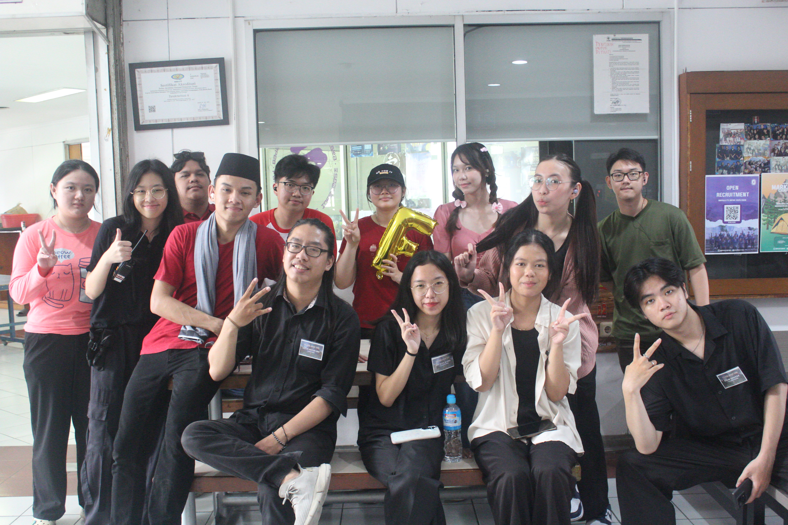

Head of FTI Open House 2025
2025
FTI Open House 2025 is an event that was made to introduce all the student organization in the Faculty of Information Technology of Tarumanagara University. We took the theme of Merbabu, Decode the Path, as to push new students to learn all the things they need to decode their future in the university. We create the main game of scavenger hunt mixed with escape room, with the final game of catching a pretend mountain visitor killer by clues we've hidden beforehand, to gamify our theme of decoding their path. As the head of the FTI Open House 2025, one of the biggest event of Student Representative Committee of Faculty of Information Technology, Tarumanagara University, there's a lot of things I did through out the event preparation and execution, such as recruited, trained, and managed a committee of 41 students across 4 divisions (publication and documentation, security, event, and equipment and catering), negotiated with and managed external vendors and guest speakers, served as the central point of command on the event day, making critical, time-sensitive decisions, and conducted a thorough post-event evaluation by collecting and analyzing feedback from attendees and committee members. This event has successfully executed by 41 crew team member across 2nd and 3rd year student of Faculty of Information Technology, Tarumanagara University. These event was participated by 92 students across 1st and 2nd year student of Faculty of Information Technology, Tarumanagara University. This event wasn't perfect, so by this experience of being the head of the event, I learnt so much to be better in the future.


